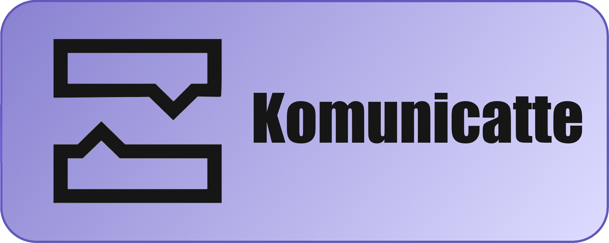
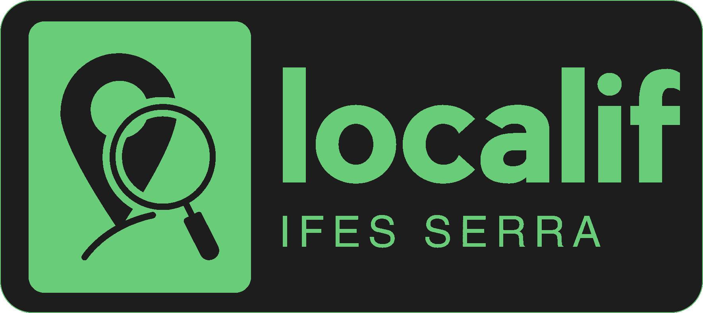

Sobre Mim
Olá!
Sou João Pedro Spinassé, e atualmente estou no
curso de Bacharelado em Sistema de Informação
no IFES Campus Serra.
Também estou aprendendo HTML, CSS, JavaScript,
Python, C, Java e muitas outras coisas! Sou uma pessoa que gosta de
aprender coisas novas e sempre fico feliz em
ajudar os outros. Meus hobbies incluem ouvir música,
assistir séries e filmes e jogar videogame.
Projetos
O projeto BSI Hub é um site desenvolvido para fornecer aos alunos do curso de BSI todas as informações relacionadas ao curso em um só lugar. O objetivo do projeto é criar uma plataforma centralizada para que os alunos possam acessar informações sobre o curso, como calendários, materiais de estudo, notas, eventos, entre outros recursos.
O komunicatte é um aplicativo de conversas por texto e chamadas online que foi desenvolvido originalmente com o nome Samuzap na disciplina Laboratório de Sistemas de Informação e foi transformado para a disciplina de Desenvolvimento Web. O objetivo era criar uma plataforma onde usuários possam separar conversas entre perfis designados para diferentes finalidades.
O LocalIF é um aplicativo que utiliza reconhecimento de imagem para determinar a localização dos usuários no campus do IFES em Serra. Ao tirar uma foto por meio do aplicativo, ele identifica o local onde a foto foi tirada e exibe a localização em um mapa interativo. Também é possível visualizar um caminho para outro local no campus.
Trabalhos Prévios
O LEDS é um laboratório de extensão do IFES focado em desenvolver soluções tecnológicas para a comunidade, incluindo o projeto SmartIdea, projeto do qual eu participo, que visa facilitar a validação de ideias de softwares por meio de ferramentas e métodos eficientes.
No Tribunal de Contas do Estado do Espírito Santo, faço parte da equipe de atendimento e suporte de TI. Minhas atividades incluem atender chamados de suporte, realizar manutenção de computadores e auxiliar na configuração de sistemas.